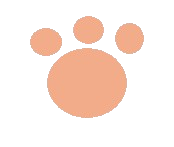
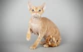

Inicio
DR
S
Sp
Contacto
Devon Rex

Peso
Machos: (pequeños): Menos de 3 kg Hembras: (pequeñas): Menos de 3 kg
Color de ojos
Ámbar, aguamarina, azul, cobrizo, verde, dorado, avellana, ojos dispares, naranja, amarillo
Pelaje
Longitud: corto. Características: rizado. Colores: blanco, azul, negro, crema, rojo, marrón, frost (gris claro), platino, fawn (leonado), chocolate, castaño, cinnamon (canela), lavanda, champán, seal (foca)
Salud y forma de actuar
Esperanza de vida: 9 - 13 años. Necesidad de atención/Socialización: moderada. Tendencia a perder pelo: baja